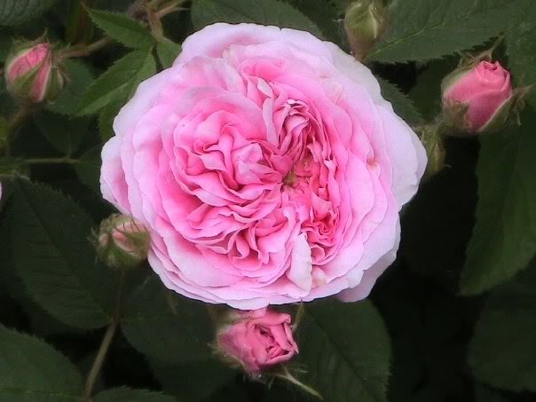
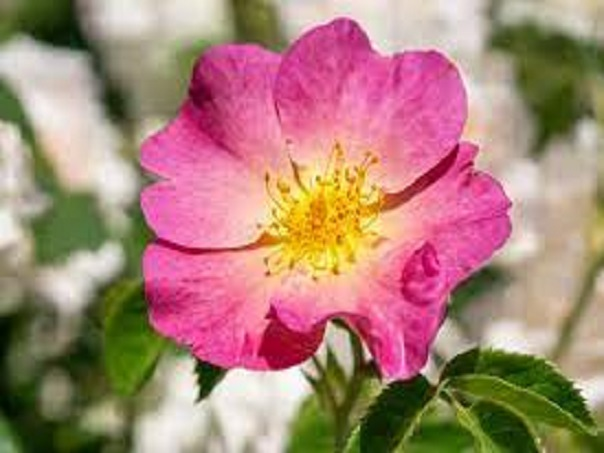

The rose family dates back to over 30 million years ago. Though the flowers have evolved to sport natural beauty, easy hybridization between species made them a popular target for cultivation. Starting around 5,000 years ago, Chinese gardeners began to experiment with rose breeding. However, it wasn’t until the 18th century that these rose breeds made their way to Europe. The middle east was another popping center for roses, and they were grown extensively there during the Roman empire. The flowers kept gaining popularity throughout history and even became incorporated in religious use during the Middle Ages. The French really became interested in rose breeding around 1800 and they developed many of the classics including Gallicas, Damasks, La France, and Albas.
| Iamge | Name | About |
|---|---|---|
|  | Old Garden Rose | Often referred to as “antique” roses and “historic” roses, the Old Garden Rose has been around since before 1867. Double-flower blooms emit a notably strong-scented fragrance, but they only bloom once per season, unlike Modern Roses. Since they are a time-tested variety, Old Garden Roses have evolved with the advantage of being extra hardy and disease-resistant. |
|  | Wild Roses | Considered the wildflower type of rose, Wild Roses, or “species roses,” lack the cross-breeding history and hybridization of other modern varieties. Wild Roses typically have a single bloom with a five-petal flower. The easiest way to determine a Wild Rose is in their color–they’re almost always pink! In fact, it’s an anomaly to find a red or white Wild Rose. |